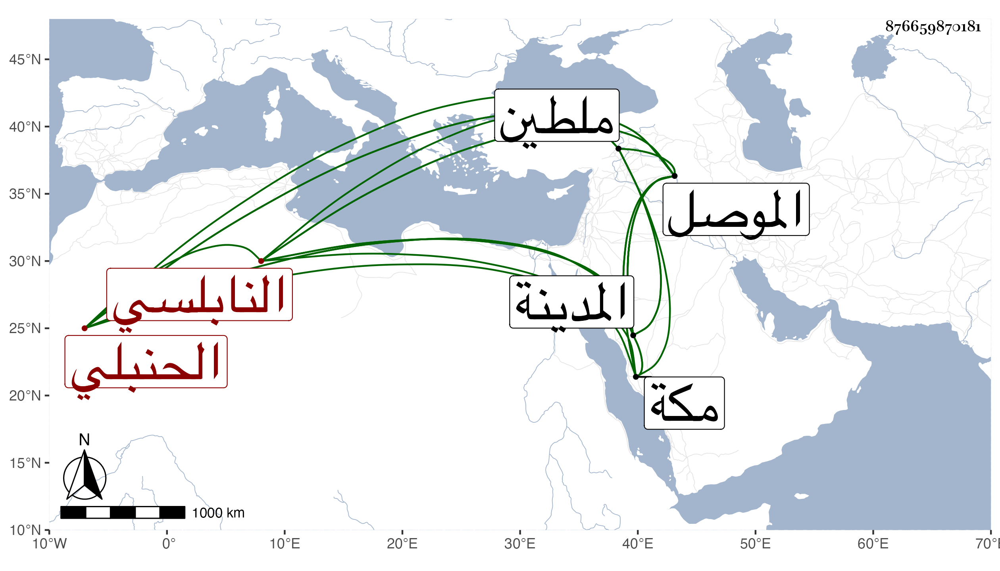

0902Sakhawi.DawLamic.ITO20230111-ara1.EIS1600.876659870181
Biography ID: 876659870181
إبراهيم بن محمد بن محمد بن محمد بن عمر البرهان النابلسي الحنبلي والد أحمد الآتي ويعرف بابن فلاح . حكى عنه ولده أنه حدث عن شيخه عبد الملك بن أبي بكر الموصلي الأصل ثم المقدسي قال رأيت في ترجمة وزير لصاحب الموصل أنه تعاهد هو وصاحب الموصل أن من مات منهما حمل إلى مكة وطيف به أسبوعا ثم يرد إلى المدينة فيدفن في رباط جمال الدين يعني به محمد بن علي بن منصور الأصبهاني المعروف بالجواد الذي في ركن المسجد القبلي ويكتب على باب الرباط رابعهم كلبهم فمات الوزير وفعل به ذلك قال الشيخ عبد الملك فلما قرأت هذه الترجمة تاقت نفسي أن أحج وأرى هذا المكتوب فبينا أنا نائم ليلة رأيت أني حججت ودخلت المدينة وزرت القبر ثم لم تكن همتي إلا الرباط لأرى تلك الكتابة فلما رأيتها فإذا هي أربعة أسطر فعجبت وهي :
| لي سادة قربهم ربهم | رجوت أن يحصل لي قربهم |
| فقلت إذ قربني حبهم | ثلاثة رابعهم كلبهم |
فلما انتبهت من نومي بادرت لكتابتها في الظلام على هامش كتاب خوفا من نسيانها . وحكى عن شيخه أيضا محمود الغزنوي أنه دخل في سياحة ملطية فبينا هو نائم إذ رأى بلالا رضي الله عنه كأنه بمكان مرتفع وهو ينادي أيها الناس هلموا إلى رسول الله صلى الله عليه وسلم فبادرت إلى الخروج فرأيت رحبة متسعة فيها حلقة عظيمة تكون قدر أربعمائة نفس كلهم من الصحابة فنظرت فلم أعرف منهم إلا أبا ذر وأبا الدرداء والنبي صلى الله عليه وسلم جالس في صدر الحلقة وبجانبه الجنيد البغدادي وهو يتكلم معه في المريد والارادة قال ثم رفع صلى الله عليه وسلم رأسه وهو يقول خير القرون قرني ثم الذين يلونهم ثم الذين يلونهم ثم قال مشيرا إلى الصحابة أتظنون أنكم قرني فقط كل من كان على سنتي ومتابعتي فهو في قرني إلى يوم القيامة .
